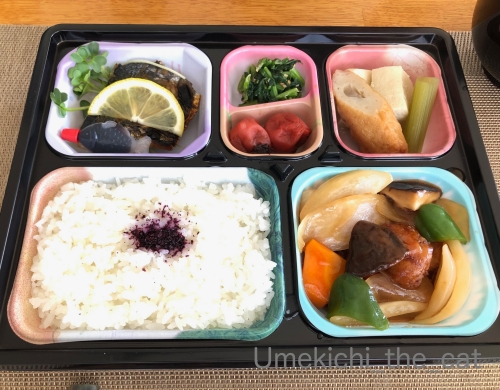
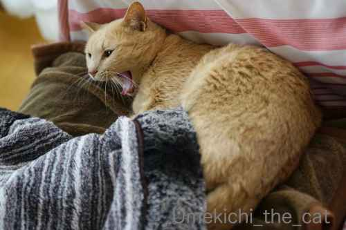
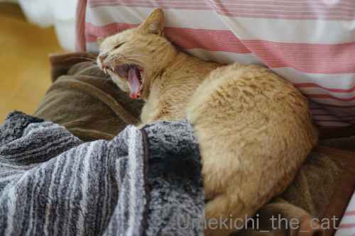
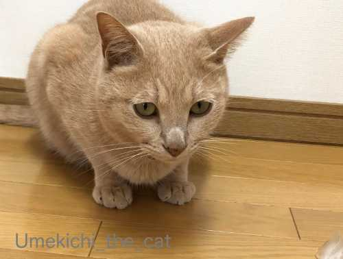
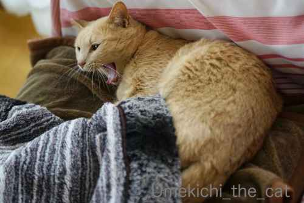
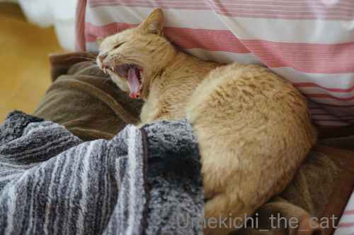
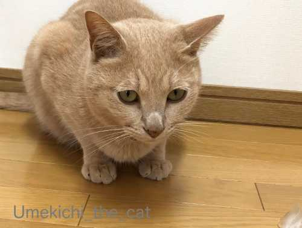

梅吉、国の調査に協力する！？ [梅吉]


はい！大正解！！
梅吉、定期診察のため病院にやってまいりました＾＾

先生にお腹を触診されて恒例のお怒りのシャーーーーーーッッッ(⌒-⌒;
今にも食いつきそうな表情とキバとお口の角度ですが梅吉はそんなことはしません。
梅吉エライ♪

この日は採血予定だったので別室に連れ去られますw
無事に終了して戻ってきたところで先生から「ちょっとお願いが・・・」と。
先日の新型コロナウイルスはネコの間で感染伝播するのニュース。
ご記憶の方も多いと思います。
飼い猫を完全室内飼いにするか外に出すかの考え方は国によってそれぞれ。
ヨーロッパでは「室内に閉じ込める？それは虐待！」って考えが主流と聞きます。
世界猫歩きを見ていても「家に帰ってくるのはご飯とお昼寝の時だけ（笑）」
なんて飼い猫はたくんさんいました。
北米は？大都会以外は自由に歩き回っているかな？？南米は？？？
アジア・東南アジア・中央アジア
オセアニア・アフリカ、中央アジア・・・・うーん(ｰ ｰ;)
日本では室内飼いが主流ですが飼い主さんや地域によっても考え方は違うと思います。
世界のあちこちから飼い猫が新型コロナウィルスに感染した等のニュースは聞こえてきますが
感染したとされる飼い猫たちがどんな飼われかたをしていたのか、は
実は報告書からはほとんど見えてこないそうです（梅吉の先生談）
先の東大医科学研究所の報告も実験室でのお話。
ならば我が国で飼い方を含めた飼い猫・犬のコロナウィルス感染の実態調査をしよう！
と言うことになり検体を集めよ！！と国から獣医さんへ指令が。
で、『今回採血をした血液の一部を調査に使わせてもらえませんか？』
とのお話だったのです。
東大医科学研究所の調査目的の説明書を読んで「血液を研究に使う」旨の同意書にサイン。
家族構成、飼い主＆梅吉の年齢、飼育環境（完全室内飼いかどうか、ですね）などを記入。
わ〜、ちょっとドキドキしました(〃▽〃)

病院から帰ってきて疲れて爆睡するひとw
梅吉の血液検査の結果を教えてもらえるのか？
それがいつになるのか？？は先生も全くわからないそう。（よくあるパターンらしい）
私も「教えてもらえたらラッキー」ぐらいに思っておくことにします。
でもこの種の調査が始まって協力出来たのは嬉しい！！
日本中の飼い主さん達が心配してきちんとした調査を望んでいたはずだもの。
もちろん私もその一人。
どんな調査結果になるのかしら。有意義な発見があると嬉しいな。
数ヶ月後「日本の飼い猫の新型コロナウィルス感染状況云々・・・」のニュースを目にしたら
ああ、梅吉が協力したヤツね！！って思ってください＾＾
上記には「猫！猫！！」と書いていますが調査は犬も対象です。
先生は犬の検体も集めなければならない様でボヤいてましたわ(´艸`)
いきなり集めよと言われてしかも締め切りがタイトだってwww
調査地域は最初に非常事態宣言が出された感染者の多い都道府県が対象の様です。

病院途中の神社の末社にて。
ぬいぐるみでもコラでもないですよ！ほんまもんです。おしっぽパタパタしてましたから。
これは御神体なのでしょうか・・・ (≧▽≦)
梅吉の持病の方はお薬が一種類増えることになりました。
状態が悪いからではなくもうちょっとなんとかしたいが理由です。
錠剤なので乳鉢で粉にしてゴハンにふりかけて与えてます。
気づいて食べなくなるか？と思いましたが今のところ大丈夫＾＾
ネコリンピック2020秘話 [梅吉]
zombiekongさんの満月広場で開催されていたネコリンピック2020。
5月末、結果発表と表彰式があり梅吉は
「肉球部門」 →表彰式１
「迷惑顔(コスプレ)部門」 →表彰式２
「白目部門」 →表彰式２
「スキマスキー部門」 →表彰式３
で4個の金メダル、
「ジャンプ部門」「縦長(ノビノビ)部門」では銀メダルをいただきましたm(_ _)m
みなにゃん＆わん＆ぴょん本当に可愛くてポーズやシャッターチャンスもバッチリな力作揃い。
甲乙付け難い作品ばかりで審査に参加された方はかなりお悩みになったのでは？
順位付けという意味ではなく
楽しいお写真への賛辞とお礼の気持ちを込めて私は審査にも参加！！
悩んで悩んで結局「梅吉」に投票したりw
親ばか手前味噌で本当にお恥ずかしい限りです(〃▽〃)
でもみんにゃ、金メダル！！というのが正直な気持ちでーす(^_－)☆
ネコリンピック参加にあたって、まず、過去の写真をじっくりと見直し予選会。
これが楽しく大変で！はっきり言って選べないw
今日はそんな過程で心を鬼にしてボツにした写真をご紹介したいと思います＾＾
「肉球部門」
我が家に来て二ヶ月経った頃、生後六ヶ月の梅吉の肉球 (≧▽≦)
つやぴかですよねー。若いっていいなって思う一枚でもあります。
「迷惑顔(コスプレ)部門」
迷惑というか困った顔？
うちはよく被り物してますけどかぶせている時間は本当に短いです。
梅吉は被せられたのち数秒は
「いま わしに なにがおこっとるんやろ・・・」
という感じでじっとしています。その数秒がシャッターチャンス！！
嫌がり始めたらそこで即終了でーす。
「白目部門」
白目写真は本当にたくさんあって(⌒-⌒;
どの写真をエントリーしようかものすごく迷いました。
ちなみに白目になるのは今頃から涼しくなるまで。
今年もたくさん白目の写真を撮りたいですっ♪
「スキマスキー部門」
エントリーした写真と同じ日、状況です。
満足そうで楽しそうな表情！！
私も幼い頃狭い場所が大好きだったので梅吉の気持ちがよくわかる( ´艸｀)
ここは食器棚の上。冷蔵庫の上からずりずりっと這い進んでこの隙間へ。
出る時はそのままバック・・・・
その時の足が面白かったんですが残念ながら写真は無し。
「ジャンプ部門」
どれもこれも梅吉らしくて大好きな写真なんですがあまりにもブレブレだったり
顔が映ってなかったりするので諦めましたw
「躍動感重視」という部門を作ればよかったかしら(≧▽≦)
そのほかには
「やっちまった部門」とか
「バレーボール」（レシーブ専門職 リベロってヤツ？）
「ねこ拳法」
「超短距離走」（「超」なのは家が狭いからw）
なんてのも考えたのですがちょっとインパクトが弱いかな？と思って断念。
どんな競技が良いかな？と考えるのも楽しかった！
ネコリンピックを開催してくれたzombiekongさんには感謝でーす(^_－)☆
皆さん既にご存知かと思いますがそのzombiekongさんが5月末でssブログを卒業されました。
今後はぶんぶんキャッツに場所を移してますます勢力的に活動されるとの事。
ブログ同級生であり初期の頃からず〜っとお付き合いくださっていたので
ちょっぴり残念ではあります・・・
が、新しいサイトはホラー話あり、ホラー写真館あり個性豊かなニャンズのお話ありと充実の内容。
もちろん今後もどんどん遊びに伺う予定です。
ますますのご活躍を願って笑顔で「卒業おめでとう！」です (≧▽≦)
＊＊＊＊＊＊＊＊＊＊＊＊＊＊＊＊＊＊＊＊＊＊＊＊＊＊＊＊＊＊＊＊＊＊＊＊＊＊
今年はラベンダーがたくさん咲きました＾＾
咲きすぎると香りが弱くなっちゃうのでお花は全て切り取って乾燥中です。
 ↑ガブッと一押し↑
↑ガブッと一押し↑
5月末、結果発表と表彰式があり梅吉は
「肉球部門」 →表彰式１
「迷惑顔(コスプレ)部門」 →表彰式２
「白目部門」 →表彰式２
「スキマスキー部門」 →表彰式３
で4個の金メダル、
「ジャンプ部門」「縦長(ノビノビ)部門」では銀メダルをいただきましたm(_ _)m
みなにゃん＆わん＆ぴょん本当に可愛くてポーズやシャッターチャンスもバッチリな力作揃い。
甲乙付け難い作品ばかりで審査に参加された方はかなりお悩みになったのでは？
順位付けという意味ではなく
楽しいお写真への賛辞とお礼の気持ちを込めて私は審査にも参加！！
悩んで悩んで結局「梅吉」に投票したりw
親ばか手前味噌で本当にお恥ずかしい限りです(〃▽〃)
でもみんにゃ、金メダル！！というのが正直な気持ちでーす(^_－)☆
ネコリンピック参加にあたって、まず、過去の写真をじっくりと見直し予選会。
これが楽しく大変で！はっきり言って選べないw
今日はそんな過程で心を鬼にしてボツにした写真をご紹介したいと思います＾＾

「肉球部門」
我が家に来て二ヶ月経った頃、生後六ヶ月の梅吉の肉球 (≧▽≦)
つやぴかですよねー。若いっていいなって思う一枚でもあります。

「迷惑顔(コスプレ)部門」
迷惑というか困った顔？
うちはよく被り物してますけどかぶせている時間は本当に短いです。
梅吉は被せられたのち数秒は
「いま わしに なにがおこっとるんやろ・・・」
という感じでじっとしています。その数秒がシャッターチャンス！！
嫌がり始めたらそこで即終了でーす。


「白目部門」
白目写真は本当にたくさんあって(⌒-⌒;
どの写真をエントリーしようかものすごく迷いました。
ちなみに白目になるのは今頃から涼しくなるまで。
今年もたくさん白目の写真を撮りたいですっ♪

「スキマスキー部門」
エントリーした写真と同じ日、状況です。
満足そうで楽しそうな表情！！
私も幼い頃狭い場所が大好きだったので梅吉の気持ちがよくわかる( ´艸｀)
ここは食器棚の上。冷蔵庫の上からずりずりっと這い進んでこの隙間へ。
出る時はそのままバック・・・・
その時の足が面白かったんですが残念ながら写真は無し。


「ジャンプ部門」
どれもこれも梅吉らしくて大好きな写真なんですがあまりにもブレブレだったり
顔が映ってなかったりするので諦めましたw
「躍動感重視」という部門を作ればよかったかしら(≧▽≦)
そのほかには

「やっちまった部門」とか

「バレーボール」（レシーブ専門職 リベロってヤツ？）

「ねこ拳法」

「超短距離走」（「超」なのは家が狭いからw）
なんてのも考えたのですがちょっとインパクトが弱いかな？と思って断念。
どんな競技が良いかな？と考えるのも楽しかった！
ネコリンピックを開催してくれたzombiekongさんには感謝でーす(^_－)☆
皆さん既にご存知かと思いますがそのzombiekongさんが5月末でssブログを卒業されました。
今後はぶんぶんキャッツに場所を移してますます勢力的に活動されるとの事。
ブログ同級生であり初期の頃からず〜っとお付き合いくださっていたので
ちょっぴり残念ではあります・・・
が、新しいサイトはホラー話あり、ホラー写真館あり個性豊かなニャンズのお話ありと充実の内容。
もちろん今後もどんどん遊びに伺う予定です。
ますますのご活躍を願って笑顔で「卒業おめでとう！」です (≧▽≦)
＊＊＊＊＊＊＊＊＊＊＊＊＊＊＊＊＊＊＊＊＊＊＊＊＊＊＊＊＊＊＊＊＊＊＊＊＊＊

今年はラベンダーがたくさん咲きました＾＾
咲きすぎると香りが弱くなっちゃうのでお花は全て切り取って乾燥中です。
ふ〜ん・・・・・という顔が上手いねこ [梅吉]

じーっとおかーさんの顔を見つめるもどことなく面白くなさそうな表情の梅吉さん。


とご機嫌斜めな訳は

おとーさんとおかーさんがベランダでこんな事してたから！！
この日は海鮮炭火焼。手前のお魚はニジマスです＾＾
お醤油とみりんで下味をつけたイカ、左のピーマンみたいなのは万願寺唐辛子（肉厚で甘くて美味）
（写真に写ってないけど）金目鯛の干物、シャウエッセン（海鮮じゃ無いけどこれはマスト！）
ズッキーニ、キャベツ。
うちのマンション、我が家の環境ではベランダBBQはOKです。
ご近所の戸建てのお家数軒も時々お庭や玄関先でBBQしていますw
近所に鰻屋さんがあってしょっちゅう炭火とうなぎタレの匂いがしているので皆さん寛大。
ベランダ栽培している玉ねぎも焼きました。

左は5月1日の画像、右側が5月23日。まあるく大きくなったでしょ＾＾
炭がバチバチ爆ぜている間は危ないので梅吉はベランダに出しません。
良い加減に熾火になったところで

ご一緒しました♪
それでもなんだか面白くなさそうな顔(⌒-⌒;
炭火で焼いたニジマスの一番良いところをお振舞いして許していただきました＾＾
＊＊＊＊＊＊＊＊＊＊＊＊＊＊＊＊＊＊＊＊＊＊＊＊＊＊＊＊＊＊＊＊＊＊＊＊＊＊＊＊＊＊
運動不足気味？自粛生活で体力落ちちゃったかな？というあなたに捧げるこの体操。
（音出ますよ！！）
5分弱の体操なんですが本気でやるとかなりキツいです。
というか動きについていけないー！
私は初めてやった翌日筋肉痛になりましたwww
皆さん頑張って体力づくりをして with&after コロナを乗り切りましょう(≧▽≦)
夏の過ごし方 [梅吉]
ここ数日積乱雲のような雲が立っていたりすっかり夏の空の我が家地方です。
季節が変われば過ごし方も変わる。
新しい生活様式を始めた梅吉さん＾＾
おくつろぎ場所は発泡スチロールブロックで作った特製ベッド。
ある時はしどけなくエラそうに。
ある時はお手手びよ〜んで。
観相窓のベッドも使ってくれてます＾＾
上から覗くとこんな感じ。ぴったりサイズ！！
この寝方だと窓から見えるご尊顔はこんな感じ。
ある時はアゴ乗せスタイル (≧▽≦)
またある時は妙に姿勢の良い姿で寝ていたり ( ´艸｀)
（しばらくこの姿勢のままでしたw）
座禅を組む修行僧の後ろ姿のよう！？
歯をむき出すスタイル(^_^;)
もちろん正しい使い方も心得ておいでですw
冬の間あんなに入り浸っていたクリアボールには見向きもしなくなっちゃいました。
むぎゅむぎゅっとしたお姿はしばしお預けのようです。
＊＊＊＊＊＊＊＊＊＊＊＊＊＊＊＊＊＊＊＊＊＊＊＊＊＊＊＊＊＊＊＊＊＊＊＊＊＊
春先に植えたイチゴの苗。
花がたくさん咲いたので実もたくさんなるはずと楽しみにしていたのですが・・・
まともな果実になったのは3個orz・・・
一つは虫食いが激しくて食べられず。
写真は残り2個の画像なんですが果実が小さいし白くありません？？？
いつ赤くなるんだろうとしばらく様子を見ていたのですが白いまま。
遠い記憶を辿るとお店のイチゴの苗コーナーには
白と赤の実のなる苗がそれぞれあった、多分。
で、多分私たちが苗についているプレートを確かめず白いイチゴの苗を買って、
植えて、赤くなるのを待っていた模様wwwww
果実に鼻を近づけると熟れた甘い香りがするので思い切って食べてみると・・・
もうね、熟れすぎてジャムみたいにドロドロになってましたー(〃▽〃)
という事で初めてのイチゴ栽培は大失敗。
種類を取り違えていたなんて致命的すぎるミスは置いておいて
イチゴの果実自体もあまり大きく育てられませんでした。
プランター栽培では難しい！？
気を取り直してイチゴを撤去した鉢には落花生を植えました！
生の塩茹での落花生を召し上がったことはありますか？
シーズンにはお通しに出てきたりすることもありますよね。
落花生が地中に成ると知ったのは結構大人になってから(〃▽〃)
どんなふうに育っていくのかどんな花が咲くのか初めてづくしのチャレンジになります。
楽しみだー。
我が家から見えるあべのハルカスが緊急事態宣言解除の翌日から夜からこんなことになってます。
これはこれで全然悪いことではないと思いますが
まだニコニコの状況とはとても思えなくとっても複雑(ｰ ｰ;)
もう大丈夫だよ！！と言うことではなく
新しい生活様式に変えたり気をつけなければいけないことはたくさんあるけど
みんなで頑張って行こうねってメッセージだと受け止めることにしましたm(_ _)m
↑ガブッと一押し↑
季節が変われば過ごし方も変わる。
新しい生活様式を始めた梅吉さん＾＾

おくつろぎ場所は発泡スチロールブロックで作った特製ベッド。
ある時はしどけなくエラそうに。

ある時はお手手びよ〜んで。

観相窓のベッドも使ってくれてます＾＾
上から覗くとこんな感じ。ぴったりサイズ！！

この寝方だと窓から見えるご尊顔はこんな感じ。

ある時はアゴ乗せスタイル (≧▽≦)

またある時は妙に姿勢の良い姿で寝ていたり ( ´艸｀)
（しばらくこの姿勢のままでしたw）
座禅を組む修行僧の後ろ姿のよう！？

歯をむき出すスタイル(^_^;)

もちろん正しい使い方も心得ておいでですw
冬の間あんなに入り浸っていたクリアボールには見向きもしなくなっちゃいました。
むぎゅむぎゅっとしたお姿はしばしお預けのようです。
＊＊＊＊＊＊＊＊＊＊＊＊＊＊＊＊＊＊＊＊＊＊＊＊＊＊＊＊＊＊＊＊＊＊＊＊＊＊

春先に植えたイチゴの苗。
花がたくさん咲いたので実もたくさんなるはずと楽しみにしていたのですが・・・
まともな果実になったのは3個orz・・・
一つは虫食いが激しくて食べられず。
写真は残り2個の画像なんですが果実が小さいし白くありません？？？
いつ赤くなるんだろうとしばらく様子を見ていたのですが白いまま。
遠い記憶を辿るとお店のイチゴの苗コーナーには
白と赤の実のなる苗がそれぞれあった、多分。
で、多分私たちが苗についているプレートを確かめず白いイチゴの苗を買って、
植えて、赤くなるのを待っていた模様wwwww
果実に鼻を近づけると熟れた甘い香りがするので思い切って食べてみると・・・
もうね、熟れすぎてジャムみたいにドロドロになってましたー(〃▽〃)
という事で初めてのイチゴ栽培は大失敗。
種類を取り違えていたなんて致命的すぎるミスは置いておいて
イチゴの果実自体もあまり大きく育てられませんでした。
プランター栽培では難しい！？

気を取り直してイチゴを撤去した鉢には落花生を植えました！

生の塩茹での落花生を召し上がったことはありますか？
シーズンにはお通しに出てきたりすることもありますよね。
落花生が地中に成ると知ったのは結構大人になってから(〃▽〃)
どんなふうに育っていくのかどんな花が咲くのか初めてづくしのチャレンジになります。
楽しみだー。

我が家から見えるあべのハルカスが緊急事態宣言解除の翌日から夜からこんなことになってます。
これはこれで全然悪いことではないと思いますが
まだニコニコの状況とはとても思えなくとっても複雑(ｰ ｰ;)
もう大丈夫だよ！！と言うことではなく
新しい生活様式に変えたり気をつけなければいけないことはたくさんあるけど
みんなで頑張って行こうねってメッセージだと受け止めることにしましたm(_ _)m
油断出来ない [梅吉]

上を悔しそうに？不審そうに？？見上げる梅吉さん。
※庇部分の外壁が汚くてびっくり(＠◇＠)
でもこの位置を掃除するのはたいへんだなぁ・・・
大規模修繕して塗り直すと綺麗になるけれど
ベランダの植物を動かしたり窓が開けられなかったり
うっとおしくて大変なんですよね、大規模修繕。
札幌で経験済みwww※
話を元に戻して。
８年間使っていなかった木製のラックを組み立ててベランダで使うことにしました。
園芸用品をあれこれ収納。
梅吉の見晴台にもなったのですが
このラックから庇に飛び乗る様になってしまった！
庇→我が家の屋根部分へ→脱走と大変なことになる！！
そこで「ねずみ返し」ならぬ「梅吉返し」を設置しました。
100均で突っ張り棒やワイヤーフェンスを買っておっとが自作(≧▽≦)

目を離すといまだに何をするかわからないやんちゃ坊主w
梅吉返し設置後しばらくの間上を見上げながら不満そうに
わーわー鳴いていました(⌒-⌒;
知らない場所に行くのってそんなに楽しいのかしらねぇぇぇぇ。
油断のならない危険なお・と・こ♡ ですね！梅吉さんは( ´艸｀)
iPhone蔵出し動画。
（10秒です 音は出ません＾＾）
2015年、梅吉、我が家に来て4日目の動画。
顔があどけない！！
＊＊＊＊＊＊＊＊＊＊＊＊＊＊＊＊＊＊＊＊＊＊＊＊＊＊＊＊＊＊＊＊＊＊＊＊＊＊＊


すっかり気に入った近所の会席料理のお店のお弁当。
おかずの品数、味、お値段（¥750！！）全てがピカイチ＾＾
白米の隣は酢豚でお野菜の下にお肉がぎっしり(｣ﾟﾛﾟ)｣
お腹いっぱいでごはんは二口くらいしか食べられませんでした。
お魚はそれぞれ「サゴシの塩焼き」「鯖の煮付け」です。
鯖の煮物って味噌煮しか食べたことなかったのですが
これは生姜を効かせたおしょうゆ味でした。新鮮！！


近所では卯の花（＝ウツギ。旧暦卯月の頃に咲くから卯の花）が満開です。

（も〜さんに頂いたコメント見て画像追加しましたm(_ _)m）
お散歩途中に見かけたお寺のカラーコーンのカバー。
三角錐部分はささらみたいなもので棒のところは竹を編んだもので包んであります。
和風でかっこいい！！

ネコリンピック2020のセキュリティも担当してます！
安全安心な大会をお約束します (≧▽≦)
選手のエントリーも絶賛受付中！
選手の「種」に制限はありませんwww（よね？zombiekongさん＾＾）
自分の居場所にこだわる梅吉 [梅吉]
おっとはテレワーク、私はブログ活と
ふたりともPCに向かっている時の梅吉さんの居場所は
食卓テーブルの上のおかーさんの左横、おとーさんの右斜め前。
（我が家では食卓テーブル＝PCデスクなのですw）
梅吉の背後に写っているはおっとの手。
この場所にブランケットやタオルケットを敷いておかないと
わしの身の置き所がない！という顔で見られますw
上の写真は慌ててブランケットを敷いて差し上げたら
満足げに自分の匂いチェックをしているの図。
怖い顔してますけど満足なさった様です＾＾
ランチ後のベランダカフェも習慣になってます。
これは5月5日こどもの日。
ちょうどライラックの盆栽が見頃でした。
柏餅と台湾の凍頂烏龍茶。
私たちがお茶を飲んでいる間の「わしの居場所」はバラの鉢の横＾＾
また別の日、初辰（はったつ）招き餅と台湾の凍頂烏龍茶。
台湾の烏龍茶が好きー！！台湾で買ったのが無くなったのでKALDIでゲット。
台湾烏龍茶、KALDIで買ったのは初めてですが
大量に入ってないし何より美味しいので気に入りました。
初辰招き餅は住吉大社の初辰まいりの日にのみ
近所の和菓子屋さんの店頭に並ぶんですよ。
ご近所に住んで何年にもなるのに最近知りました(ｰ ｰ;)
そして・・・・・
油断するとこれだから(⌒-⌒;
こういう場所は見逃しませんよねwww
4月8日から閉門を続けていた住吉大社ですが6月初めから開門となる様です。
長かったー！！
おっとのテレワークも今月末までかな？
6月からの勤務体制は詳しく聞いてませんが
出社とテレワークを使い分けながらになりそうな気配。
世の中解禁ムードが漂い経済活動はゆっくりと動き出しそうですが
私はしばらく今のペースの生活を続けるつもりです＾＾
あちこちお出かけするのはもう少し先のお楽しみ、でしょうか。
今から約２週間後の6月初めの感染者数等がどうなるのかとっても気になります。
＊＊＊＊＊＊＊＊＊＊＊＊＊＊＊＊＊＊＊＊＊＊＊＊＊＊＊＊＊＊＊＊＊＊＊＊＊＊＊＊＊＊＊
【おまけ】
iPhone蔵出し動画
（31秒 音は出ません＾＾）
湯のみ茶碗に残ったまたたび茶の残り香に興奮する梅吉w
一才四ヶ月の時の動画です。
湯のみ茶碗を引き寄せて絡むwww
人間だったら酔っ払って人に絡むタイプかしらー (≧▽≦)
↑ガブッと一押し↑
ふたりともPCに向かっている時の梅吉さんの居場所は

食卓テーブルの上のおかーさんの左横、おとーさんの右斜め前。
（我が家では食卓テーブル＝PCデスクなのですw）
梅吉の背後に写っているはおっとの手。

この場所にブランケットやタオルケットを敷いておかないと
わしの身の置き所がない！という顔で見られますw
上の写真は慌ててブランケットを敷いて差し上げたら
満足げに自分の匂いチェックをしているの図。

怖い顔してますけど満足なさった様です＾＾

ランチ後のベランダカフェも習慣になってます。
これは5月5日こどもの日。
ちょうどライラックの盆栽が見頃でした。
柏餅と台湾の凍頂烏龍茶。

私たちがお茶を飲んでいる間の「わしの居場所」はバラの鉢の横＾＾

また別の日、初辰（はったつ）招き餅と台湾の凍頂烏龍茶。
台湾の烏龍茶が好きー！！台湾で買ったのが無くなったのでKALDIでゲット。
台湾烏龍茶、KALDIで買ったのは初めてですが
大量に入ってないし何より美味しいので気に入りました。
初辰招き餅は住吉大社の初辰まいりの日にのみ
近所の和菓子屋さんの店頭に並ぶんですよ。
ご近所に住んで何年にもなるのに最近知りました(ｰ ｰ;)
そして・・・・・

油断するとこれだから(⌒-⌒;
こういう場所は見逃しませんよねwww
4月8日から閉門を続けていた住吉大社ですが6月初めから開門となる様です。
長かったー！！
おっとのテレワークも今月末までかな？
6月からの勤務体制は詳しく聞いてませんが
出社とテレワークを使い分けながらになりそうな気配。
世の中解禁ムードが漂い経済活動はゆっくりと動き出しそうですが
私はしばらく今のペースの生活を続けるつもりです＾＾
あちこちお出かけするのはもう少し先のお楽しみ、でしょうか。
今から約２週間後の6月初めの感染者数等がどうなるのかとっても気になります。
＊＊＊＊＊＊＊＊＊＊＊＊＊＊＊＊＊＊＊＊＊＊＊＊＊＊＊＊＊＊＊＊＊＊＊＊＊＊＊＊＊＊＊
【おまけ】
iPhone蔵出し動画
（31秒 音は出ません＾＾）
湯のみ茶碗に残ったまたたび茶の残り香に興奮する梅吉w
一才四ヶ月の時の動画です。
湯のみ茶碗を引き寄せて絡むwww
人間だったら酔っ払って人に絡むタイプかしらー (≧▽≦)
iPhone発掘動画と高田さんのパン [梅吉]
iPhoneのストレージ管理のため梅吉動画を整理中。
遊び好きで何にでも興味津々の梅吉は過去にこんなことも。
（14秒 音は出ません＾＾）
変化する水が面白いのかな＾＾
先日、marimoさんがお湯加減を見ている猫の画像を紹介されていましたが
冬場、梅吉も時々湯加減を確かめている様です。
「様」なのはその瞬間を見たことがないからw
でも片手だけ関節のあたりまでびしょびしょになっているので
バスタブに手を突っ込んでいるのは間違いない！
いつかその瞬間をカメラに収めたいものです。
人間がお風呂に浸かった時みたいに目を細めていたりしてwww
（12秒音は出ません環境音入ってますw）
この遊び好きだったのになぁ。
最近はとんとご無沙汰(⌒-⌒;
下僕と追いかけっこの方が面白いみたいです。
今日は後半長いので梅吉話題はこの辺でm(_ _)m
↑ガブッと一押し↑
遊び好きで何にでも興味津々の梅吉は過去にこんなことも。
（14秒 音は出ません＾＾）
変化する水が面白いのかな＾＾
先日、marimoさんがお湯加減を見ている猫の画像を紹介されていましたが
冬場、梅吉も時々湯加減を確かめている様です。
「様」なのはその瞬間を見たことがないからw
でも片手だけ関節のあたりまでびしょびしょになっているので
バスタブに手を突っ込んでいるのは間違いない！
いつかその瞬間をカメラに収めたいものです。
人間がお風呂に浸かった時みたいに目を細めていたりしてwww
（12秒
この遊び好きだったのになぁ。
最近はとんとご無沙汰(⌒-⌒;
下僕と追いかけっこの方が面白いみたいです。
今日は後半長いので梅吉話題はこの辺でm(_ _)m
夕暮れのベランダで [梅吉]

夕日の時間に梅吉さんのベランダ散歩。
西日を浴びてなかなか凛々しいではないですか！

のっしのっしと近づいてくる姿はサバンナを闊歩する百獣の王の風格！？
でもちょっとキメ切れない感じになっているのは・・・・・

お鼻がびちょびちょになっているから( ´艸｀)
何かの加減で涙目になった時梅吉は鼻涙管を通った涙がお鼻の上の方に溢れ出る様です。
（詳しいお話はこちらでどうぞ）
こうなるとどんなにカッコつけてもおマヌケな感じにw
お鼻（涙でしみて）がじにじの「にじ男」さん、って呼んでます。

この日は二本の稲妻の様なにじにじ模様！
こんな模様のエナジードリンクがあった様なw
(あれはは三本だけど）
前回からブログ写真のアップ方法を変えましたが
トラブルなく皆様にご覧いただけた様で安心しました。
これで「写真の使用領域がー！！」と心配する必要が無くなりました＾＾
過去記事の写真をリサイズする手間もなくなったし。
セキュリティの面で若干不安はあったのですが対策をして使用。
戸惑うこともなく快適に使えてます (≧▽≦)
＊＊＊＊＊＊＊＊＊＊＊＊＊＊＊＊＊＊＊＊＊＊＊＊＊＊＊＊＊＊＊＊＊＊＊＊＊＊＊＊＊＊＊

春先に植えた玉ねぎ。
こんなに大きくなりました。
もうどんな味なのか気になって食べてみたくて我慢できません！

もっと太らせても良いのですがとりあえず一個炭火で焼いて食べてみた。
採りたて、そのままかじってもあまーい！タイプの玉ねぎではなく辛かった(⌒-⌒;
でも味が濃くて美味しい。
今関西では淡路産の美味しい新玉ねぎが出回ってますが味を比べると・・・・負けますw
淡路の新玉ねぎは特別甘くってみずみずしくて美味しいんですよねー。
自分で野菜を作ってつくづく思うのは
一定の生産量を保ちつつ美味しい作物を作る農家の方はやっぱりプロなんだなーということ。
規格を揃えたりするのも大変ですよね。ほんと尊敬します。
ただ！自分で作ると採りたてを味わえる。
これで野菜の本来の味を知ることもできます。これは他に変え難い。
プロの野菜を買うもよし、我が家みたいにたかがプランターですが自分で作るもよし、です！！
ありがたい、観相窓 [梅吉]

梅吉が入っているこのカゴ。
うちの子になった時からの愛用品なんですがもうボロボロです。
小さい時は可愛らしく収まっていましたが最近では完全に容量オーバーw
寝返りを打つたびにミシミシ、バリバリ音がして日々崩壊を続けていました(ｰ ｰ;)

連休中にあちこち片付けている途中でこのカゴの存在を思い出す。
ちょっと深いのですが上げ底をすれば梅吉の寝顔が今まで通り見えるはず！！
あれこれ細工をして検品作業をお願いしました。
早速入っていただけるのかしら？


皆様の「でしょー！！」の大合唱が聞こえてくる様です(⌒-⌒;
そうすんなりは入っていただけないのが猫様。
・・・・・数日後

ちゃんと入っていただけました＾＾
高さもちょうど良い感じ？この小さく開いたスペースがちょうど窓の様な感じで

お手手が出たり

これは！観相窓！？
観相窓ってこんなのです。
東大寺では基本、年に二回のありがたいものですが当ブログでは頻繁に見られる様になりそうです。
きっと人の世にありがたいご慈悲があることでしょう・・・・・ (≧▽≦)

お世話になったベッドに別れを告げる様にキリリッ。
＊＊＊＊＊＊＊＊＊＊＊＊＊＊＊＊＊＊＊＊＊＊＊＊＊＊＊＊＊＊＊＊＊＊＊＊

大阪には甘くて辛いカレーという文化があるのですが・・・
（大阪以外でもあるのかな？少なくとも札幌では食べたことなかったです）
甘辛いのとは違います。甘くて辛い。
これは私の語彙と表現力が乏しいので説明できないのではなく
食べたことのある人しかわからなーい、不思議な味なのです！！
大阪：本町にある「白銀亭」というカレー屋さん。
白地に黒字で店名を染め抜いた潔い暖簾に最初は小料理屋さんかと思ったのですよ。
が、ランチどき男性が行列しているのと辺りに漂うカレー臭（笑）で合点がいきましたwww
そのお店のレトルトカレーをスーパーで発見！！
期待通りの甘くて辛いカレー。
食べたいなー、でも食べに行けないなーというジレンマを解消してくれました。
私辛いものは得意なんですが辛くて途中から涙目に。
食べ始めはそうでも無いのですが途中からとっても辛くなります。
トライされる方は侮らないでくださいねー( ´艸｀)
※ブログ写真のアップ方法を変えてみました。
家庭内テストはしたのですがもしかしたら写真が表示されない方がいらっしゃるかも！？
（おっとPCではGoogleChromeとWindows10のブラウザは大丈夫でした）
画像が見られない時は遠慮なくおっしゃってくださいね。
大丈夫かなぁ。どきどきどき・・・・・
暖かかったり冷たかったり [梅吉]
GWに入ってから良いお天気続きの我が家地方。
衣替えをしてひたすらお洗濯やお家の片付けをしております。
はかどるのでつい頑張ってしまう。で、おばちゃんはそろそろ疲れてきたw
タイミングよく月曜日は雨の予報。
家事も手抜きして（笑）ゆっくり映画鑑賞をしたいです。
人間の衣類や寝具はすっかり夏物にしましたけど・・・・・

なんでしょう。
この暖かい系のものを片付けてはイケナイ雰囲気！！

![[猫]](https://blog.ss-blog.jp/_images_e/101.gif) わしのもうふは
わしのもうふは

しまったら あかんー！！
（梅吉心の叫び）
梅吉が下に敷いているフリースのブランケットは片付けさせてもらいましたけど
ちゅうちゅうブランケット（写真に写っているもの）と
その他のひざ掛けなどはいまだ出しっ放し(⌒-⌒;
ぬくぬくと暖かいところで眠るその一方、氷で遊ぼうとするカフェオレ色（笑

右端に切れ気味で写っている氷、わかりますか？
製氷庫をガサガサすると飛んでくるニャンコは多いと聞きますが
梅吉もその例に漏れず。
でも冷たさを楽しむわけでもなし。
（12秒です 音は出ません＾＾）
ガブッとするとお口が冷たくなるからエアガブ！？
iPhoneから梅吉の秘蔵映像もぞくぞくと発見されております。
ブログにアップしたいのですが編集が間に合わない〜。
皆様へのご訪問も遅れておりますm(_ _)m
↑ガブッと一押し↑
衣替えをしてひたすらお洗濯やお家の片付けをしております。
はかどるのでつい頑張ってしまう。で、おばちゃんはそろそろ疲れてきたw
タイミングよく月曜日は雨の予報。
家事も手抜きして（笑）ゆっくり映画鑑賞をしたいです。
人間の衣類や寝具はすっかり夏物にしましたけど・・・・・
なんでしょう。
この暖かい系のものを片付けてはイケナイ雰囲気！！


（梅吉心の叫び）
梅吉が下に敷いているフリースのブランケットは片付けさせてもらいましたけど
ちゅうちゅうブランケット（写真に写っているもの）と
その他のひざ掛けなどはいまだ出しっ放し(⌒-⌒;
ぬくぬくと暖かいところで眠るその一方、氷で遊ぼうとするカフェオレ色（笑

右端に切れ気味で写っている氷、わかりますか？
製氷庫をガサガサすると飛んでくるニャンコは多いと聞きますが
梅吉もその例に漏れず。
でも冷たさを楽しむわけでもなし。
（12秒です 音は出ません＾＾）
ガブッとするとお口が冷たくなるからエアガブ！？
iPhoneから梅吉の秘蔵映像もぞくぞくと発見されております。
ブログにアップしたいのですが編集が間に合わない〜。
皆様へのご訪問も遅れておりますm(_ _)m

カフェオレ色の梅吉

梅吉 2023年8月10日 永眠


梅吉と出会った譲渡会

犬猫の理由なき殺処分ゼロ
妄想広告
UMEKICHI 光

爆発的に早い！
時々攻撃的！
Thanks to Mr.Boss365
爆発的に早い！
時々攻撃的！
Thanks to Mr.Boss365